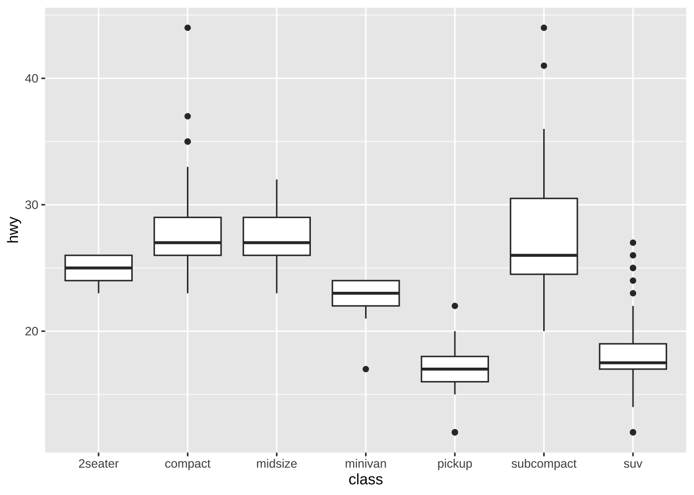
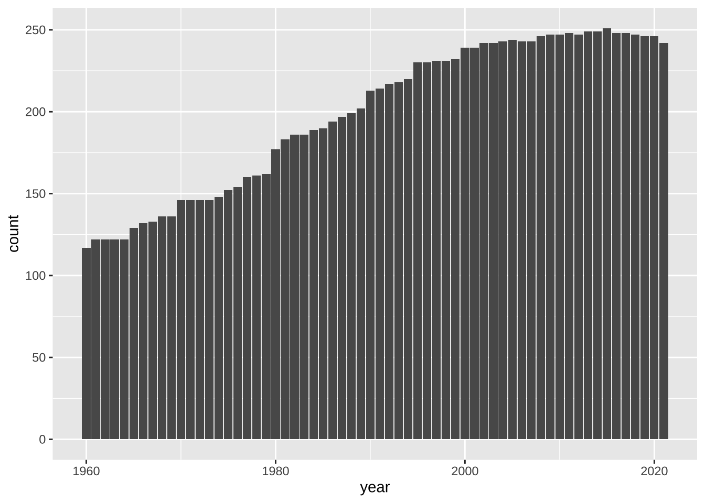

Chapter 18 視覚化（Visualize）
18.1 基本的なこと
R では、簡単に、グラフを描画できますが、質の高いグラフを作成するには、ggplot2 パッケージを用いたものが標準となっています。ggplot2 は、tidyverse パッケージの一部ですので、tidyverse パッケージをインストール、使えるように、library(tidyverse) として読み込んであれば、そのまま使うことができます。
サイト：https://ggplot2.tidyverse.org パッケージサイト：https://CRAN.R-project.org/package=ggplot2
18.1.1 ggplot2 概要
ggplot2 is a system for declaratively creating graphics, based on The Grammar of Graphics. You provide the data, tell ggplot2 how to map variables to aesthetics, what graphical primitives to use, and it takes care of the details.
ggplot2は、グラフィックスの生成に関する「Grammar of Graphics（グラフィックスの文法）」に基づいて、宣言的にグラフを作成するためのシステムです。データを提供し、変数を視覚的要素にマッピングする方法や、どのようなグラフィカルな基本要素を使用するかをggplot2に伝えると、詳細な部分はggplot2 が処理してくれます。
18.1.2 基本的な例
18.1.2.1 tidyverse の読み込み
タイトルに日本語を使う場合があるときは、install.packages('showtext') で、showtext パッケージをインストールして、下のように設定してください。
library(tidyverse)
#> ── Attaching core tidyverse packages ──── tidyverse 2.0.0 ──
#> ✔ dplyr 1.1.2 ✔ readr 2.1.4
#> ✔ forcats 1.0.0 ✔ stringr 1.5.0
#> ✔ ggplot2 3.4.2 ✔ tibble 3.2.1
#> ✔ lubridate 1.9.2 ✔ tidyr 1.3.0
#> ✔ purrr 1.0.1
#> ── Conflicts ────────────────────── tidyverse_conflicts() ──
#> ✖ dplyr::filter() masks stats::filter()
#> ✖ dplyr::lag() masks stats::lag()
#> ℹ Use the conflicted package (<http://conflicted.r-lib.org/>) to force all conflicts to become errors
library(showtext)
#> Loading required package: sysfonts
#> Loading required package: showtextdb
showtext_auto()ggplot2 に含まれている、mpg データを使って、簡単な、散布図と、箱ひげ図を描いてみます。mpg の変数などについては、Help で調べてください。
str(mpg)
#> tibble [234 × 11] (S3: tbl_df/tbl/data.frame)
#> $ manufacturer: chr [1:234] "audi" "audi" "audi" "audi" ...
#> $ model : chr [1:234] "a4" "a4" "a4" "a4" ...
#> $ displ : num [1:234] 1.8 1.8 2 2 2.8 2.8 3.1 1.8 1.8 2 ...
#> $ year : int [1:234] 1999 1999 2008 2008 1999 1999 2008 1999 1999 2008 ...
#> $ cyl : int [1:234] 4 4 4 4 6 6 6 4 4 4 ...
#> $ trans : chr [1:234] "auto(l5)" "manual(m5)" "manual(m6)" "auto(av)" ...
#> $ drv : chr [1:234] "f" "f" "f" "f" ...
#> $ cty : int [1:234] 18 21 20 21 16 18 18 18 16 20 ...
#> $ hwy : int [1:234] 29 29 31 30 26 26 27 26 25 28 ...
#> $ fl : chr [1:234] "p" "p" "p" "p" ...
#> $ class : chr [1:234] "compact" "compact" "compact" "compact" ...

data = mpgでデータを指定します。どのようなグラフにするか、幾何関数（Geometric Function）を指定します。散布図では、
geom_pont()、箱ひげ図では、geom_boxplot()です。x 軸、y 軸などに対応する変数の写像（mapping）を指定します。
散布図では、
dspl（displacemnt エンジンの排気量（単位 リットル））を x 軸に、hwy高速道路で１ガロンで走れる距離（単位 マイル）を y 軸に割り当てています。箱ひげ図では、
class車の型式を、x 軸に、hwy高速道路で１ガロンで走れる距離（単位 マイル）を y 軸に割り当てています。
記号的に書くと、下のようになっています。
ggplot(data = <DATA>) + <GEOM_FUNCTION>(mapping = aes(<MAPPINGS>))
18.2 散布図（Scatter Plot）
散布図は、データの二つの変数（列） を x と y に対応させる、最も基本的なグラフです。最初に試すべきグラフだともいうことができます。mapping = は省略することができます。
ggplot(data = <data>, aes(x = <column name for x>, y = <column name for y>)) +
geom_point()ggplot(data = df_iris, aes(x = Sepal.Length, y = Sepal.Width)) +
geom_point()変形（Transform）のときにつかった、iris データを使います。

18.2.1 ラベル Labels
グラフの表題や、x 軸、y 軸のラベルをつけるには labs() を使います。
ggplot(data = <data>, aes(x = <column name for x>, y = <column name for y>)) +
geom_point() +
labs(title = "Title", x = "Label for x", y = "Label for y")ggplot(data = iris, aes(x = Sepal.Length, y = Sepal.Width)) +
geom_point() +
labs(title = "Scatter Plot of Sepal Data of Iris", x = "Sepal Length", y = "Sepal Width")
ggplot(data = iris, aes(x = Sepal.Length, y = Sepal.Width)) +
geom_point() +
labs(title = "菖蒲の萼の長さと幅についての散布図", x = "萼の長さ", y = "萼の幅")
このように、日本語をタイトルや、ラベルに使うことも可能ですが、以後は、データに日本語が含まれていない場合には、そのまま表示します。
18.2.2 色付き Colors
菖蒲（iris）のデータは、Species 列に、三種類の菖蒲の名前が含まれていました。それぞれに、違う色で表示してみましょう。それには、x 軸、y 軸に対応する変数を指定したように、color = Species と指定します。
18.2.3 形状 Shapes
色ではなく、形で Species を区別することも可能です。

色と、形、両方を同時に使うことも可能です。
ggplot(data = iris, aes(x = Sepal.Length, y = Sepal.Width, color = Species, shape = Species)) +
geom_point()
18.3 箱ひげ図 Boxplot
The boxplot compactly displays the distribution of a continuous variable.
箱ひげ図は、連続な値をとる変数の分布を簡潔な表示でみることができるグラフです。箱や、線の長さ、外れ値の表示なども、正確に決まっていますので、次のビデオをみてください。英語ですが、わかりやすく、まとまっていると思います。
Transcript ボタンから、スクリプトを表示することもできます。
例のように、それぞれのグループごとに箱ひげ図を表示することもできますが、その場合は、文字データや、離散的な数値データ（いくつかの飛び飛びの値をとる変数）を使います。x と y を入れ替えれば、横向きになります。


color を指定すると、枠に色がつき、fill を指定すると、箱の中が塗り潰されます。


18.3.1 ヒストグラム Histogram
Visualize the distribution of a single continuous variable by dividing the x axis into bins and counting the number of observations in each bin. Histograms (geom_histogram()) display the counts with bars; frequency polygons (geom_freqpoly()) display the counts with lines. Frequency polygons are more suitable when you want to compare the distribution across the levels of a categorical variable.
単一の連続変数の分布を可視化するために、x軸をビンに分割し、各ビン内の観測値の数を数えます。ヒストグラム（geom_histogram()）は、棒で数を表示します。一方、頻度多角形（geom_freqpoly()）は、数を線で表示します。頻度多角形は、カテゴリ変数のレベル間の分布を比較したい場合により適しています。
説明ビデオです。https://vimeo.com/221607341
ggplot(data = iris, aes(x = Sepal.Length)) +
geom_histogram()
#> `stat_bin()` using `bins = 30`. Pick better value with
#> `binwidth`.枠（bins）を幾つに分けるか、または枠の幅を指定するようにとのメッセージが表示されます。
枠（bins）の数を変更するには bins = <number> を使います。幅を指定するときは、binwidth = <number> とします。
最初の例では、枠の個数を（初期設定では30になっているものを）10個とし、二つ目の例では、幅を1にしています。


頻度多角形（geom_freqpoly()）を使うと以下のようになります。Species ごとに比べたり、色をつけたりもできます。
ggplot(data = iris, aes(x = Sepal.Length)) +
geom_freqpoly()
#> `stat_bin()` using `bins = 30`. Pick better value with
#> `binwidth`.

滑らかな曲線にするときは、density plot を使います。alpha は透明度で 0 から 1 の値で指定します。数が小さい方が薄くなります。color で線の色もあわせて設定することも可能です。いろいろと試してみてください。


18.4 例 パッケージ Gapminder を使って
すでに、dplyr をつかった変形で確認しましたが、簡単に、データを見ておきましょう。
df_gm <- gapminder
df_gm %>% slice(1:10)
#> # A tibble: 10 × 6
#> country continent year lifeExp pop gdpPercap
#> <fct> <fct> <int> <dbl> <int> <dbl>
#> 1 Afghanistan Asia 1952 28.8 8425333 779.
#> 2 Afghanistan Asia 1957 30.3 9240934 821.
#> 3 Afghanistan Asia 1962 32.0 10267083 853.
#> 4 Afghanistan Asia 1967 34.0 11537966 836.
#> 5 Afghanistan Asia 1972 36.1 13079460 740.
#> 6 Afghanistan Asia 1977 38.4 14880372 786.
#> 7 Afghanistan Asia 1982 39.9 12881816 978.
#> 8 Afghanistan Asia 1987 40.8 13867957 852.
#> 9 Afghanistan Asia 1992 41.7 16317921 649.
#> 10 Afghanistan Asia 1997 41.8 22227415 635.glimpse(df_gm)
#> Rows: 1,704
#> Columns: 6
#> $ country <fct> "Afghanistan", "Afghanistan", "Afghanist…
#> $ continent <fct> Asia, Asia, Asia, Asia, Asia, Asia, Asia…
#> $ year <int> 1952, 1957, 1962, 1967, 1972, 1977, 1982…
#> $ lifeExp <dbl> 28.801, 30.332, 31.997, 34.020, 36.088, …
#> $ pop <int> 8425333, 9240934, 10267083, 11537966, 13…
#> $ gdpPercap <dbl> 779.4453, 820.8530, 853.1007, 836.1971, …summary(df_gm)
#> country continent year
#> Afghanistan: 12 Africa :624 Min. :1952
#> Albania : 12 Americas:300 1st Qu.:1966
#> Algeria : 12 Asia :396 Median :1980
#> Angola : 12 Europe :360 Mean :1980
#> Argentina : 12 Oceania : 24 3rd Qu.:1993
#> Australia : 12 Max. :2007
#> (Other) :1632
#> lifeExp pop gdpPercap
#> Min. :23.60 Min. :6.001e+04 Min. : 241.2
#> 1st Qu.:48.20 1st Qu.:2.794e+06 1st Qu.: 1202.1
#> Median :60.71 Median :7.024e+06 Median : 3531.8
#> Mean :59.47 Mean :2.960e+07 Mean : 7215.3
#> 3rd Qu.:70.85 3rd Qu.:1.959e+07 3rd Qu.: 9325.5
#> Max. :82.60 Max. :1.319e+09 Max. :113523.1
#> 18.4.0.1 Tidyverse::ggplot
18.4.0.1.1 First Try - with failures
You will encounter similar failures. We list three of them.

There are lots of data in each year: 1952, 1957, 1962, 1967, 1972, 1977, 1982, 1987, 1992, 1997, …. Can you tell how many years are in the data? The following command shows different years in the data.
You can guess it from the data summary above. Can you imagine how many countries are in the data? 142? Anyhow, too many points are on each year.

Now, you can guess the reason why you had this output. This is often called a saw-tooth.
ggplot(df_gm, aes(x = year, y = lifeExp)) + geom_boxplot()
#> Warning: Continuous x aesthetic
#> ℹ did you forget `aes(group = ...)`?Can you see what the problem is? The year is a numerical variable in integer.
The following looks better.

18.4.0.1.2 Box Plot

You can use fill and color for the box plot. Try and check the difference.
df_gm %>% filter(year %in% c(1952, 1987, 2007)) %>%
ggplot(aes(x=as_factor(year), y = lifeExp, fill = continent)) +
geom_boxplot()
The following are examples of line graphs. Please see the differences.
df_lifeExp <- df_gm %>%
group_by(continent, year) %>%
summarize(mean_lifeExp = mean(lifeExp), median_lifeExp = median(lifeExp), max_lifeExp = max(lifeExp), min_lifeExp = min(lifeExp), .groups = "keep")
df_lifeExp %>% ggplot(aes(x = year, y = mean_lifeExp, color = continent, linetype = continent)) +
geom_line()
df_lifeExp %>% ggplot() +
geom_line(aes(x = year, y = mean_lifeExp, color = continent)) +
geom_line(aes(x = year, y = median_lifeExp, linetype = continent))
18.4.1 Original Data? WDI?
df_gm %>% slice(1:10)
#> # A tibble: 10 × 6
#> country continent year lifeExp pop gdpPercap
#> <fct> <fct> <int> <dbl> <int> <dbl>
#> 1 Afghanistan Asia 1952 28.8 8425333 779.
#> 2 Afghanistan Asia 1957 30.3 9240934 821.
#> 3 Afghanistan Asia 1962 32.0 10267083 853.
#> 4 Afghanistan Asia 1967 34.0 11537966 836.
#> 5 Afghanistan Asia 1972 36.1 13079460 740.
#> 6 Afghanistan Asia 1977 38.4 14880372 786.
#> 7 Afghanistan Asia 1982 39.9 12881816 978.
#> 8 Afghanistan Asia 1987 40.8 13867957 852.
#> 9 Afghanistan Asia 1992 41.7 16317921 649.
#> 10 Afghanistan Asia 1997 41.8 22227415 635.18.4.1.1 WDI
- SP.DYN.LE00.IN: Life expectancy at birth, total (years)
- NY.GDP.PCAP.KD: GDP per capita (constant 2015 US$)
- SP.POP.TOTL: Population, total
df_wdi <- WDI(
country = "all",
indicator = c(lifeExp = "SP.DYN.LE00.IN", pop = "SP.POP.TOTL", gdpPercap = "NY.GDP.PCAP.KD")
)#> Rows: 16758 Columns: 7
#> ── Column specification ────────────────────────────────────
#> Delimiter: ","
#> chr (3): country, iso2c, iso3c
#> dbl (4): year, lifeExp, pop, gdpPercap
#>
#> ℹ Use `spec()` to retrieve the full column specification for this data.
#> ℹ Specify the column types or set `show_col_types = FALSE` to quiet this message.df_wdi %>% slice(1:10)
#> # A tibble: 10 × 7
#> country iso2c iso3c year lifeExp pop gdpPercap
#> <chr> <chr> <chr> <dbl> <dbl> <dbl> <dbl>
#> 1 Afghanistan AF AFG 1960 32.5 8622466 NA
#> 2 Afghanistan AF AFG 1961 33.1 8790140 NA
#> 3 Afghanistan AF AFG 1962 33.5 8969047 NA
#> 4 Afghanistan AF AFG 1963 34.0 9157465 NA
#> 5 Afghanistan AF AFG 1964 34.5 9355514 NA
#> 6 Afghanistan AF AFG 1965 35.0 9565147 NA
#> 7 Afghanistan AF AFG 1966 35.5 9783147 NA
#> 8 Afghanistan AF AFG 1967 35.9 10010030 NA
#> 9 Afghanistan AF AFG 1968 36.4 10247780 NA
#> 10 Afghanistan AF AFG 1969 36.9 10494489 NAdf_wdi_extra <- WDI(
country = "all",
indicator = c(lifeExp = "SP.DYN.LE00.IN", pop = "SP.POP.TOTL", gdpPercap = "NY.GDP.PCAP.KD"),
extra = TRUE
)#> Rows: 16758 Columns: 15
#> ── Column specification ────────────────────────────────────
#> Delimiter: ","
#> chr (7): country, iso2c, iso3c, region, capital, income...
#> dbl (6): year, lifeExp, pop, gdpPercap, longitude, lati...
#> lgl (1): status
#> date (1): lastupdated
#>
#> ℹ Use `spec()` to retrieve the full column specification for this data.
#> ℹ Specify the column types or set `show_col_types = FALSE` to quiet this message.df_wdi_extra
#> # A tibble: 16,758 × 15
#> country iso2c iso3c year status lastupdated lifeExp
#> <chr> <chr> <chr> <dbl> <lgl> <date> <dbl>
#> 1 Afghanistan AF AFG 2014 NA 2023-07-25 62.5
#> 2 Afghanistan AF AFG 2012 NA 2023-07-25 61.9
#> 3 Afghanistan AF AFG 2009 NA 2023-07-25 60.4
#> 4 Afghanistan AF AFG 2013 NA 2023-07-25 62.4
#> 5 Afghanistan AF AFG 1971 NA 2023-07-25 37.9
#> 6 Afghanistan AF AFG 2015 NA 2023-07-25 62.7
#> 7 Afghanistan AF AFG 1969 NA 2023-07-25 36.9
#> 8 Afghanistan AF AFG 2010 NA 2023-07-25 60.9
#> 9 Afghanistan AF AFG 2011 NA 2023-07-25 61.4
#> 10 Afghanistan AF AFG 2008 NA 2023-07-25 59.9
#> # ℹ 16,748 more rows
#> # ℹ 8 more variables: pop <dbl>, gdpPercap <dbl>,
#> # region <chr>, capital <chr>, longitude <dbl>,
#> # latitude <dbl>, income <chr>, lending <chr>違いはわかりましたか。同じような変数についてのデータですが、WDI からダウンロードした実際のデータの場合には、練習用のデータとは、違った困難がいくつもあります。それを、少しず見ていきながら、現実世界のデータを扱えるようにしていきましょう。
18.5 コメント
18.5.1 参考文献
Cheat Sheet in RStudio: https://www.rstudio.com/resources/cheatsheets/
‘Quick R’ by DataCamp: https://www.statmethods.net/management
18.6 練習
18.6.1 Posit Primers https://posit.cloud/learn/primers
- The Basics – r4ds: Explore, I